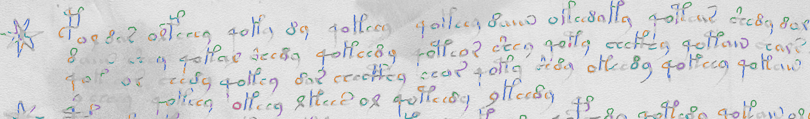
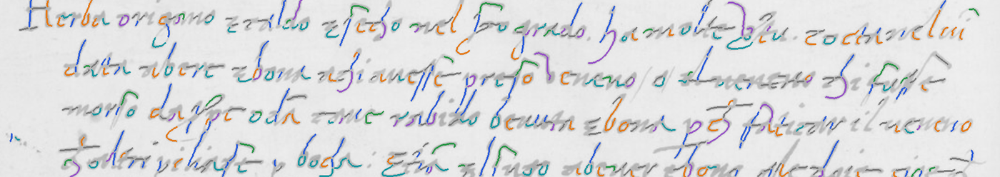

Yes, most Voynich letters start with a c-shaped curve, and a 1400s scribe's don't. Sort every letter by the first stroke the pen makes and the Voynich comes out 68% c-curves, 22% i-strokes and 11% gallows, almost the same in both of Currier's "languages". The same sort on medieval Latin and Italian, a 1400s herbal's own spelling among them, gives 35% to 45% c-curves. Measured in the ink itself, the Voynich has about 37% to 39% more c-curve than the scribe of a 1400s Italian herbal, and 18% to 30% less minim.
That second part is the surprise. Medieval scribes are known for drowning in minims, the short upright strokes of i, m, n and u; the old practice line mimi numinum niuium is nothing but minims. The Voynich scribes wrote fewer of them, not more.
Asked on Reddit in November 2026 ("Are most Voynich glyphs just c and i strokes with modifiers?"). The idea goes back to Prescott Currier, who wrote in 1976 that o, d, y and s all begin with a c-curve, that j, l and r begin with an i-stroke, and that "nearly every letter" can be built from the two. Brian Cham built his curve-line system on it in 2014. What no one had done is set the count beside a real 1400s hand.
The letters: three c-curves for every minim
Each letter goes in the class of the stroke it starts with. For the Voynich that follows Currier: o, a, d, y, s, e and the c and h of ch start with a c-curve; i, n, m, l, r, j and q with an i-stroke; k, t, p and f are the gallows. For Latin and Italian it follows how a humanistic hand builds its letters: a, c, d, e, g, o and q from a c-bowl; i, m, n, r, t, u, v, x, y and z from minims; b, f, h, k, l, long s and p from a tall stroke. The Voynich is the standard transcription (Zandbergen and Landini's, letters in EVA) on the working pages. The Erbario row is Penn's 1400s Italian herbal in its own scribe's spelling, abbreviations kept.
| Text | Letters | c-curve | i-stroke | Tall (gallows) |
|---|---|---|---|---|
| Voynich, all working pages | 153,252 | 68% | 22% | 11% |
| Voynich, Currier A | 44,453 | 68% | 22% | 10% |
| Voynich, Currier B | 93,878 | 67% | 22% | 11% |
| Erbario, as written (Italian and Latin, 1400s) | 16,581 | 45% | 36% | 19% |
| Alchemical herbal (Latin) | 33,922 | 36% | 45% | 19% |
| Macer, De viribus herbarum (Latin) | 145,162 | 35% | 46% | 19% |
| LVII Ricette (Italian) | 38,703 | 45% | 36% | 19% |
The Voynich sits far outside the Latin and Italian texts: about 3 c-curve letters for every i-stroke letter where they have about one, and half their share of tall letters. Currier A and B differ by about a point in each class. This sort is a choice of where each letter begins, so the ink is measured next, with no letters assumed.
The ink: the same lean, smaller
The page photographs themselves, Yale's for the Voynich and Penn's for the Erbario (LJS 419, northern Italy, written in "humanistic cursive script", the kind of hand Sergio Toresella saw in the Voynich in 1995). The ink is thinned to a one-pixel line, cut wherever strokes cross or join, and every piece longer than about half a letter's height is sorted by shape and weighed by its length. Both are scaled to the same letter size first.


| Pages | Pages read | c-curve | Minim |
|---|---|---|---|
| Erbario, 1400s humanistic cursive | 4 | 16% (14%–17%) | 24% (22%–27%) |
| Voynich, Currier A pages | 25 | 22% (16%–27%) | 17% (6%–22%) |
| Voynich, Currier B pages | 19 | 22% (17%–28%) | 19% (11%–21%) |
Shares are of stroke length; the range in brackets runs from the lowest page to the highest. No Voynich page reaches the Erbario's lowest minim share (21.6% at most, against 21.7%). The ink gap is smaller than the letter gap because every letter's tail, loop and join is in the ink too. The letter size each script is scaled to changes the numbers a little and the direction not at all:
| Line spacing over x-height | Erbario c-curve / minim | Voynich A | Voynich B |
|---|---|---|---|
| 3 | 16% / 23% | 23% / 15% | 24% / 17% |
| 4 | 16% / 24% | 22% / 17% | 22% / 19% |
| 5 | 16% / 25% | 21% / 18% | 19% / 21% |
The gallows: k goes with t, and p with f
The Reddit post also paired the look-alike gallows, k with f and t with p, and found they change the next letter the same way (r = 0.93). Here's what follows each gallows, compared pair by pair (1 means the same next letters in the same shares), on alternate working pages so a pairing found on one half is checked on the other.
| Pair | Even pages | Odd pages | Currier A | Currier B |
|---|---|---|---|---|
| k and t same height, one loop | 0.95 | 0.95 | 0.79 | 0.98 |
| p and f same height, two loops | 0.97 | 0.94 | 0.96 | 0.96 |
| k and f look-alikes | 0.25 | 0.33 | 0.61 | 0.20 |
| t and p look-alikes | 0.41 | 0.44 | 0.91 | 0.22 |
The gallows pair by loop count, not by look-alike shape. An e follows k 37% of the time and t 27%, and never p or f, as Currier found. The look-alike pairing holds only for t and p in Currier A pages, where t, p and f are mostly followed by c or h, much of it inside the bench gallows cth, cph and cfh. That may be where the 0.93 came from.
What it shows, and what it doesn't
- A medieval hand is also mostly bowls and minims, so "made of c and i strokes" doesn't set the Voynich apart. The mix does: far more c-curves, fewer minims, and fewer tall letters than Latin and Italian written in a 1400s hand.
- Currier A and B are written with the same strokes in nearly the same shares. Where they differ is which letters they put where, mostly the word endings (letter patterns).
- The 1400s hand is one scribe, four pages. Its cursive joins letters where the Voynich lifts the pen; the measure still reads 66% of its ink, against 54% and 62% of the Voynich's. More dated hands would make this firmer.
- None of this says what the script means. It does say the letters don't spell Latin or Italian one for one in an everyday hand of the time.
Measured with voynich/tools/strokes.py on 23 November 2026. Tables: strokes/letters.tsv, strokes/ink.tsv, strokes/gallows.tsv. The test pages were not read.